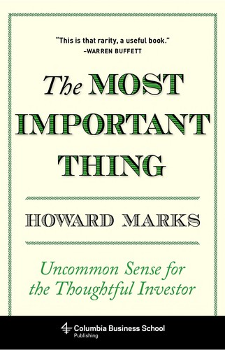

霍华德·马克斯（Howard Marks）1946年生于纽约，毕业于沃顿商学院和芝加哥大学布斯商学院，1995年联合创立橡树资本（Oaktree Capital Management），专注于另类投资和不良债务领域，管理资产一度超过1500亿美元。马克斯自1990年起开始向客户发送投资备忘录（memos），这些文字因见解深刻、文笔清晰，在华尔街广泛流传，连沃伦·巴菲特也是其忠实读者。《投资最重要的事》出版于2011年，是马克斯将这些备忘录中的核心思想整理提炼后写成的著作，后来又有注释加强版《The Most Important Thing Illuminated》问世，增补了其他顶级投资人的批注。
全书以反直觉的方式处理"最重要的事"——马克斯认为投资成功没有单一秘诀，而是由十八个"最重要的事"叠加而成，每一个都不可或缺。其中几条尤为核心。其一，理解市场周期：市场不会在均值附近平稳运行，而是在极端之间往复摆荡，投资者必须判断当下处于周期何处；其二，第二层次思维：普通投资者只做第一层思考（这家公司前景好，所以要买），而出色的投资者要做第二层思考（这家公司前景好，但市场已经反映了这个预期，当前估值是否合理？）；其三，理解风险：风险不等于波动率，而是永久性资本损失的可能性；降低风险不是回避资产，而是在价格相对价值足够便宜时才出手。马克斯特别强调"知道自己不知道什么"——对未来的谦逊认知，是抵御过度自信的最佳武器。
《投资最重要的事》出版后在投资界引发强烈反响。沃伦·巴菲特为本书撰写了封底推荐语，称其为"这是那种难得一见、真正有用的书"（"This is that rarity, a useful book."）。巴菲特在接受采访时曾多次提及，他会第一时间阅读马克斯发送的每一份备忘录，这一习惯已持续数十年。乔尔·格林布拉特称此书是"我所读过关于投资风险最清晰的阐述"。这本书2012年出版中文版《投资最重要的事》，由中信出版社发行，成为国内价值投资者的必读书目之一。马克斯的核心论断在书末浓缩为一句话："出色的投资不是购买好资产，而是把资产买好。"
对于认真对待投资的读者而言，《投资最重要的事》的价值在于它对思维方式的训练，而非对具体操作的指导。马克斯的写作风格平实却深刻，他从不标榜自己能预测市场，而是反复强调"控制下行风险"和"市场周期意识"是长期成功的根基。在每一轮牛市末期的狂热与每一轮熊市底部的绝望中，这本书所倡导的"怀疑精神"和"逆向思考"都是投资者保持清醒的利器。书名虽然叫"最重要的事"，但马克斯的真正用意是提醒读者：投资没有捷径，只有不断磨砺判断力和心理素质，才能在市场中长期生存。